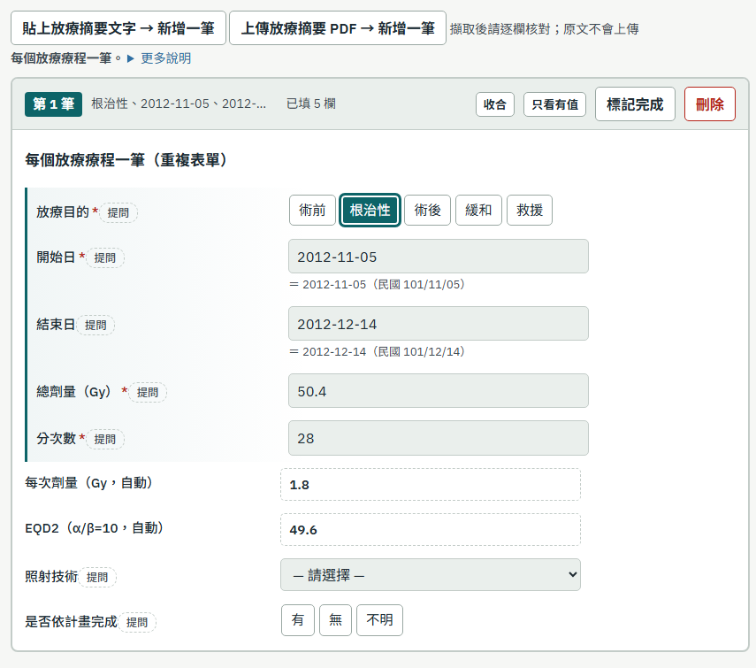
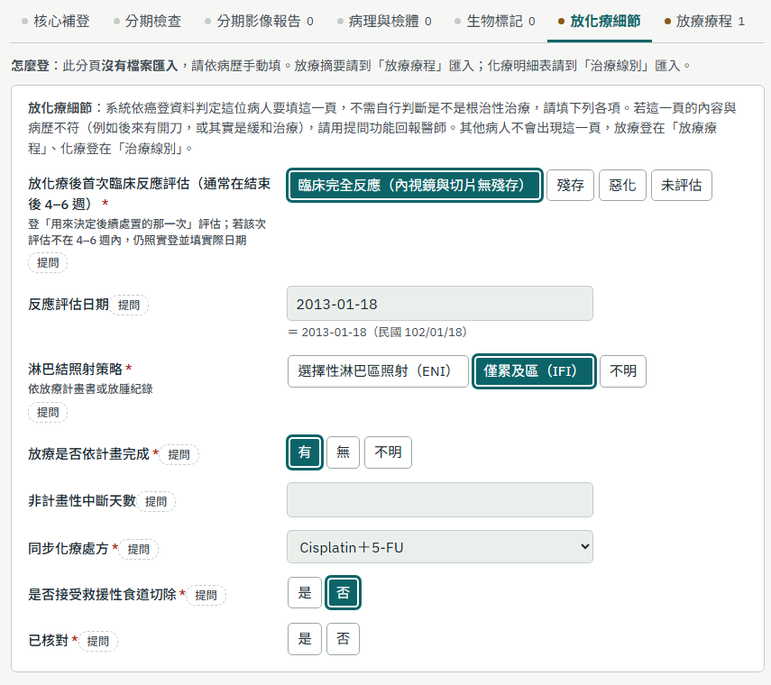

2026-11-18 示意畫面，只畫「放療療程」與「放化療細節」。病人與報告內容都是虛構的，按鈕只是示範，不會存任何資料，也沒有接到正式程式。
兩個分頁各是一長串欄位。照抄的、要判斷的、系統自動算的排在一起，看起來每一欄都同樣重要。


「待確認」每一列右邊是程式在報告裡找到的那一句，黃底是抓到的字。這也是之後醫師複查時看到的依據。
醫師只看到程式推不出來、或兩個來源對不上的項目。每一項都附程式的初值和依據，同意就按一下，不同意才改。
| 項目 | 現在 | 更動後 |
|---|---|---|
| 分頁 | 2 | 1 |
| 助理要動手找的欄位 | 19 | 2（目標） |
| 助理只需核對的欄位 | 0 | 7 |
| 助理要做的臨床判斷 | 3 | 0 |
| 同一件事登兩次 | 2 | 0 |
| 醫師要裁定的項目 | 事後逐筆複查 | 2（一致時可自動通過） |
這是最順利的情況：本院格式固定的放療摘要，文字可以選取貼上。外院掃描檔抓不到字，七項「待確認」會全部變成「要補的」，畫面結構不變，但她要手打。
另一個不知道設計者結論的測試者，拿這個示意去對現行程式。結論是大致可行，但有條件：三區的版面做得出來，可是示意畫的「最順利情況」現行程式還跑不出來。
| 示意畫面的主張 | 現行程式實測 | 工作量 |
|---|---|---|
| 貼上放療摘要，7 項自動填好 | 現行解析只認院內編號 1–22 節的摘要格式。用那個格式時日期、劑量、分次、技術抓得到；示意用的範例格式一項都抓不到 | 小到中 |
| 抓出病歷記載的計畫（Definitive 等字眼） | 沒有這個功能。現在的放療目的是用劑量和病史猜的，會把「不適合手術、單做放療 50.4 Gy」猜成術前 | 中到大 |
| 是否依計畫完成 | 有，但只看關鍵字。「中斷兩天，劑量做完」會被判成「無」，而且標成有把握 | 中 |
| 黃底標出原文出處 | 解析有回傳出處，但部分是重組過的字串，而且沒有存下來。要存就得把病歷原文片段放上雲端，需要先決定可不可以 | 大 |
| 同步化療處方由治療線別帶入 | 兩邊沒有連結，選項也對不上（治療線別有 12 個處方代碼不在這一頁的清單裡） | 中 |
| 距放療結束天數 | 已有。原本固定取最早的一筆療程，兩筆療程時會跳出錯的提醒；11-18 已在測試站修正，改取評估日之前最近結束的一筆 | 已修 |
| 首次臨床反應的程式初值 | 沒有來源，門診紀錄和內視鏡報告目前解析不了 | 大 |
| 助理不用填的欄位不擋完成 | 實測只填兩項「要補的」後按完成，被 5 個必填欄位擋下。要改必填、完成的定義和匯出欄位 | 大 |
| 醫師裁定畫面 | 雲端版的醫師帳號讀不到摘錄資料，現行做法是主持人匯出問題再匯入回覆。提問機制可以借用，但沒有「初值＋依據」的結構 | 大 |
| 外院掃描檔時「結構不變，但要手打」 | 只對一半。計畫與完成與否會變回助理判讀，醫師端也沒有依據可看 | — |
測試時另外發現的現行程式問題：把不是院內格式的放療文字用「貼上任何報告」貼進去，會被當成病理報告，新增一筆錯的病理紀錄。11-18 已在測試站修正：這類文字不再新增任何紀錄，改為提示手動登錄。
建議的下一步：先拿三到五份不同年代、去識別的本院放療摘要量現行解析的命中率；再只做「待確認」這一區，接在現有的放療療程上，不動欄位定義。第三區和醫師端等這兩步有結果再決定。
依測試結果，這一版拿掉了「全部確認」鈕：程式有把握但其實錯的值，配上一鍵確認會直接進資料。